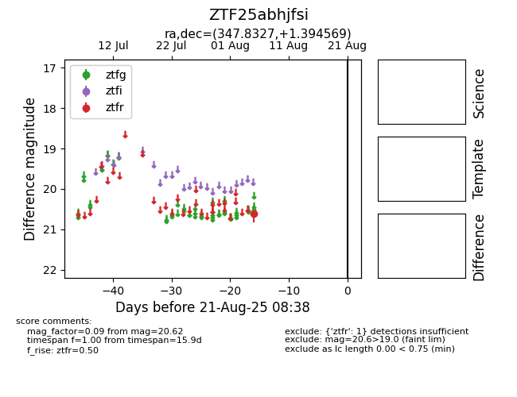

Target ZTF25abhjfsi at 2025-08-21 08:38, see:
FINK: fink-portal.org/ZTF25abhjfsi
Lasair: lasair-ztf.lsst.ac.uk/objects/ZTF25abhjfsi
ALeRCE: alerce.online/object/ZTF25abhjfsi
alt names
ZTF25abhjfsi (ztf,alerce)
coordinates:
equatorial (ra, dec) = (347.8327,+1.39457)
galactic (l, b) = (78.7197,-52.66385)
photometry
last ztfr=20.62
1 ztfr detections
